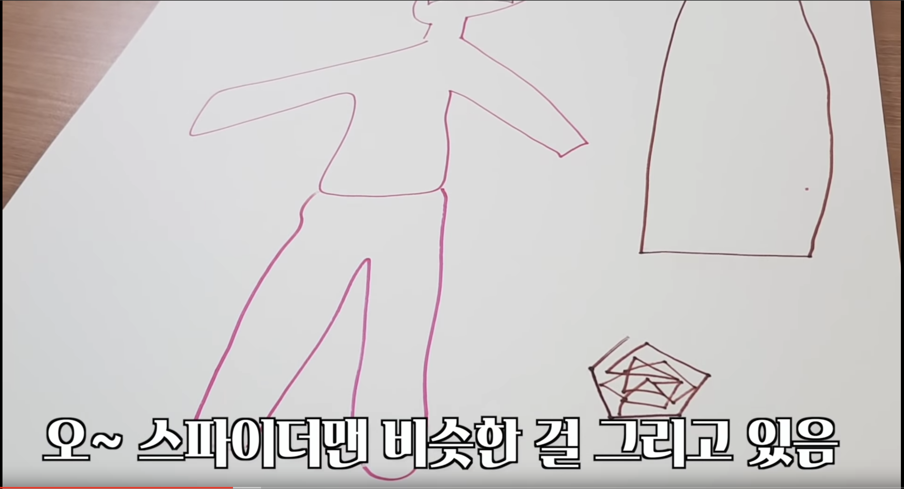

마피아 게임
많은 영상에서 감초 역할을 하는'마피아 게임'은
눈치보기, 단어 맞추기 등
다양한 게임에서 볼 수 있는 마피아 게임은
시민들이 하는 게임의 주제나 단어를 맟추거나
눈치게임에서 일부러 실패하게 만들어서
마피아 혼자 승리하는 간단한 형식의 게임이다
좀비를 가두고 시작하는 등의 게임 방식을 업로드해가며 찍고있다

- 시민인 척 시민들 사이에 숨어 있으며,
시민들의 이야기를 잘 듣고 주제를 맞춰야 이긴다

- (그림 마피아)마피아를 찾아 없애는 것이 목표이며,
가능한 추상적인 것을 그려 마피아가 눈치채지 못하게 한다
잘못된 전략으로 오히려 마피아라고 오해받고 투표에서 죽을 수도 있다